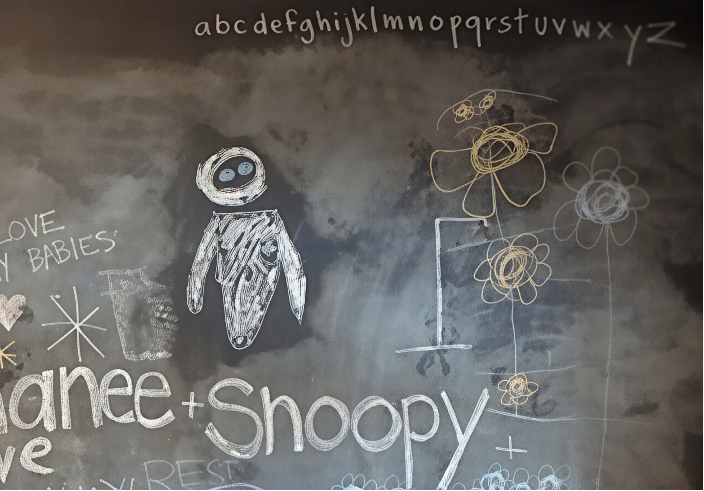
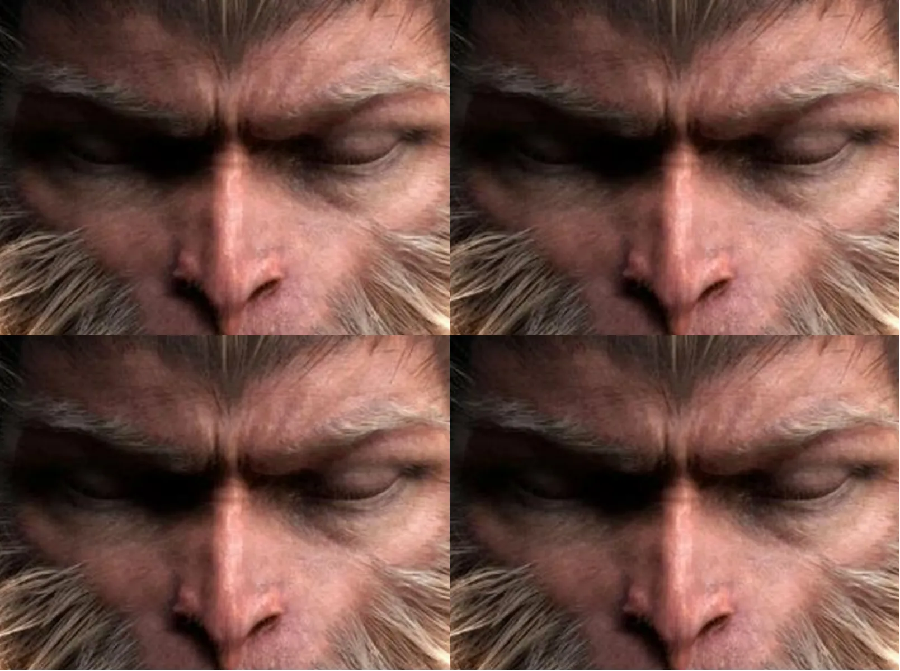
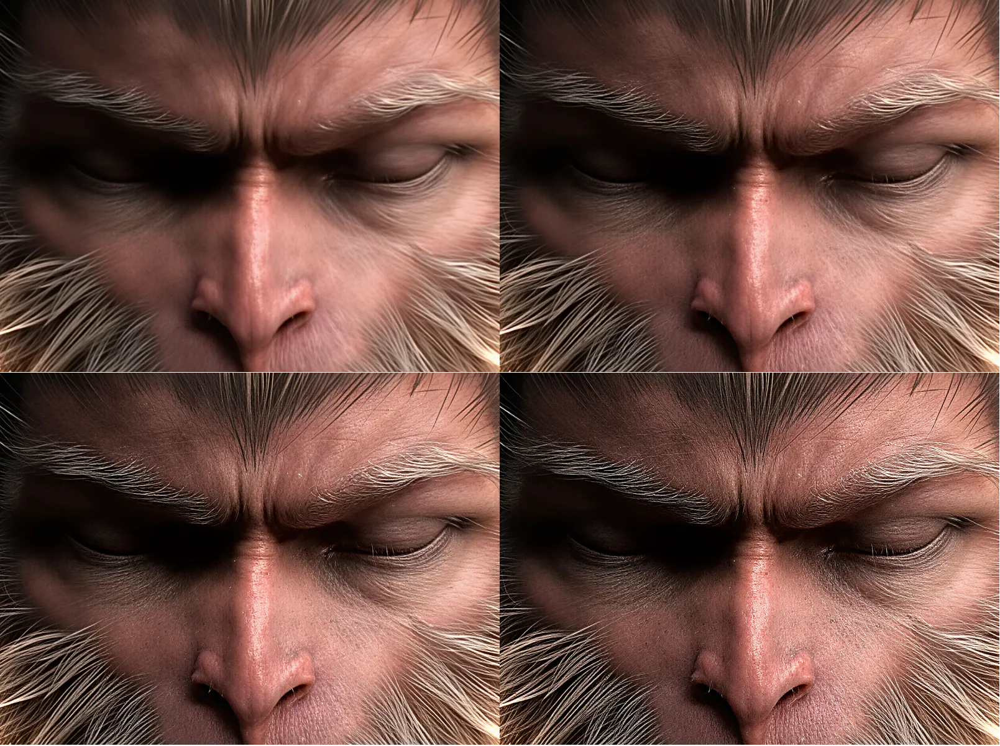
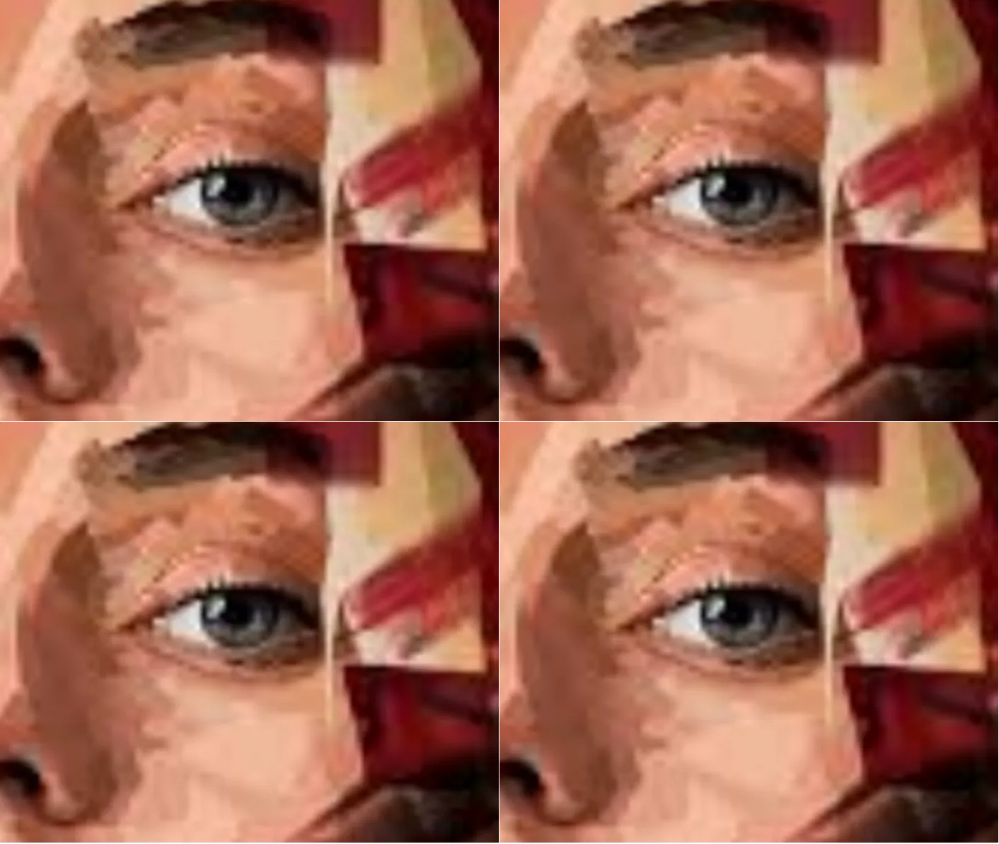
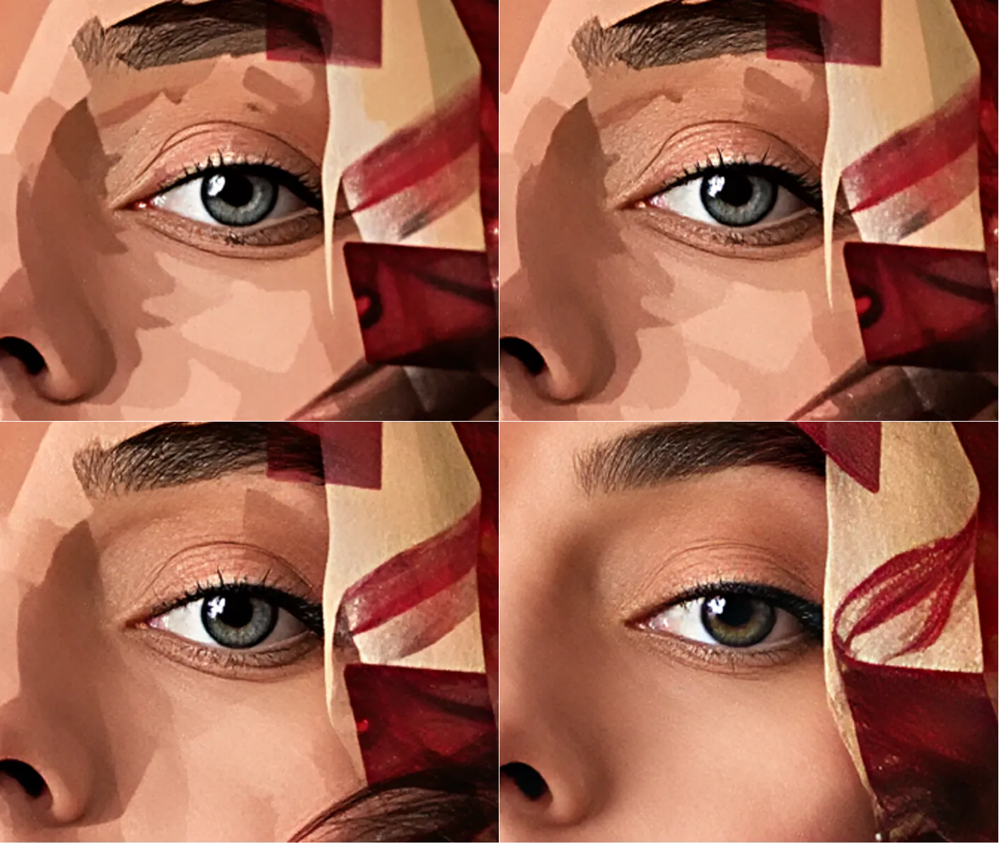

Old Photo Restoration
LOW QUALITY INPUT
HYPIR RESULT
Harnessing Diffusion-Yielded Score Priors for Image Restoration
LOW QUALITY INPUT
HYPIR RESULT
Ultra-High Resolution
994 x 720
 7952 x 5760
7952 x 5760
Text Fidelity
 LOW QUALITY INPUT
LOW QUALITY INPUT

HYPIR RESULT
Interaction with Prompts
rock covered with ice and snow
seaside town, white houses
Texture Sharpness Adjustment

Input

Adjustable Results
Generation-Fidelity Trade-off

Input

Adjustable results